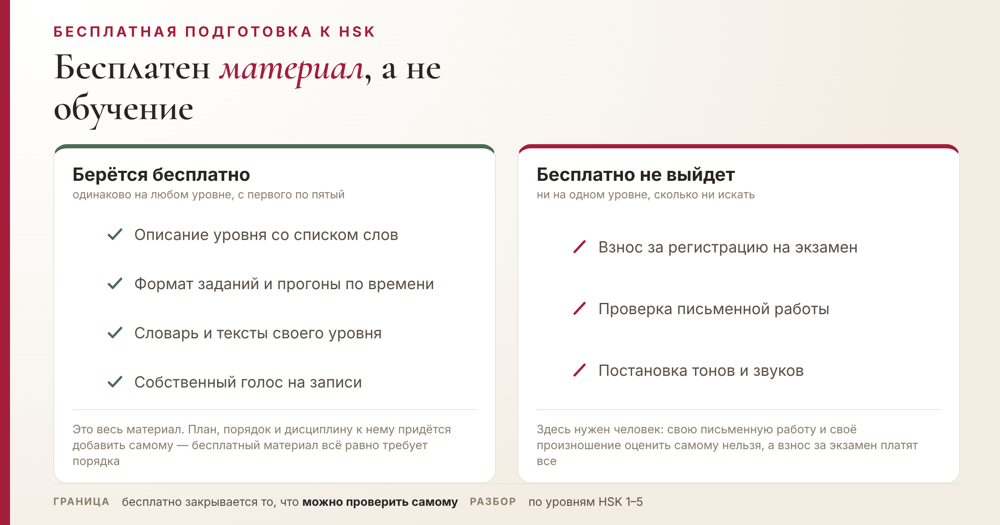
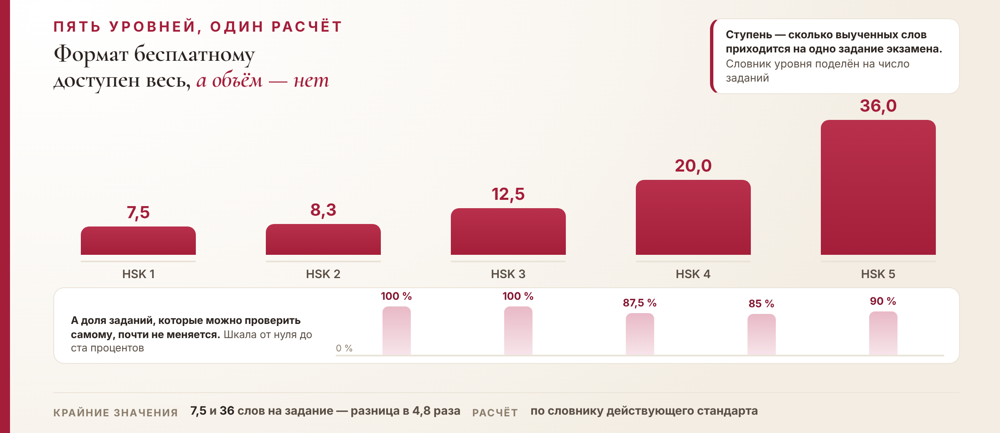

Экзамен
Бесплатная подготовка к HSK: что бесплатно на каждом уровне от 1 до 5


Запрос «бесплатная подготовка к HSK» обычно означает «бесплатные курсы». Отвечу сразу: бесплатно доступен почти весь материал, а обучение — нет, и граница между ними проходит в понятном месте.
Разберу по уровням с первого по пятый: что берётся даром, где бесплатный путь кончается и почему на старших уровнях он кончается раньше. Что подтверждает сам экзамен, разобрано отдельно: что такое сертификат HSK и кому он нужен.
Короткий ответ: бесплатен материал, а не обучение
Материал — это слова, тексты, описание формата, образцы заданий. Обучение — это кто-то, кто смотрит на сделанное вами и говорит, что там не так.
Первое доступно бесплатно почти целиком. Список слов уровня публикует сам центр тестирования, тексты на простом китайском найти можно, устройство разделов описано открыто, а прогоны по времени вы устраиваете себе сами.
Второе бесплатно не бывает — и не потому, что кто-то жадничает. Свою письменную работу нельзя оценить самому: вы видите в ней то, что хотели написать. То же с произношением.
Отсюда и ответ на вопрос «до какого уровня можно бесплатно». До HSK 2 включительно — без потерь, потому что там всё проверяется выбором ответа. С HSK 3 появляется письменная часть, и бесплатная подготовка перестаёт закрывать экзамен целиком.
И одна вещь, которая бесплатной не будет ни на каком уровне: взнос за регистрацию. Его платят все. Сумм мы не публикуем, их смотрят в своём центре; когда идут сессии и до какого числа принимают заявки, разобрано здесь: даты сдачи HSK и расписание сессий.
Что берётся бесплатно на любом уровне
Четыре позиции, одинаковые для всех уровней. У каждой есть предел, и его стоит знать заранее.
| Что это | Почему бесплатно | Чем ограничено |
|---|---|---|
| Официальное описание уровня | его публикует сам центр тестирования | это перечень, а не учебник: порядок изучения придётся собрать самому |
| Разбор формата заданий | устройство разделов описано открыто и не меняется от сессии к сессии | понять устройство — не то же, что успеть по времени |
| Словарь и любые тексты своего уровня | словари открыты, а текстов на простом китайском много | подбирать уровень текста придётся на глаз |
| Собственный голос на записи | диктофон есть в любом телефоне | вы слышите то, что хотели сказать, а не то, что сказали |
Официальное описание уровня — главный бесплатный материал и одновременно самый недооценённый: люди ищут готовый курс, хотя перечень слов лежит открыто. Как меняются требования от уровня к уровню, у нас разобрано здесь: от HSK 1 до HSK 4: как меняются требования, а про запоминание знаков есть отдельный разбор: как запоминать иероглифы.
Одного я здесь не утверждаю — сколько образцов заданий выложено сейчас и в каком виде. Проверить это мне нечем: экзаменационный портал у меня не открывается, а чужой пересказ за свою проверку я не выдаю.
Сколько выученного стоит за одним заданием
Здесь главная находка статьи, и она не та, которую ждут. Я посчитала по каждому уровню два отношения: долю заданий, которые можно проверить самому, и число слов на одно задание.
| Уровень | Слов | Заданий | Слов на задание | Проверю сам |
|---|---|---|---|---|
| HSK 1 | 300 | 40 | 7,5 | 100 % |
| HSK 2 | 500 | 60 | 8,3 | 100 % |
| HSK 3 | 1000 | 80 | 12,5 | 87,5 % |
| HSK 4 | 2000 | 100 | 20,0 | 85 % |
| HSK 5 | 3600 | 100 | 36,0 | 90 % |
Доля самопроверяемых заданий почти не меняется: от 85 до 100 процентов на любом уровне. То есть формат экзамена бесплатной подготовке доступен весь, и дело не в нём.
А вот слов на одно задание становится в 4,8 раза больше: 7,5 на первом уровне против 36 на пятом. Это наш расчёт, а не официальная величина: я поделила словник уровня на число заданий.
На первом уровне прогон по сорока заданиям проверяет почти весь ваш запас. На пятом те же сто заданий берут выборку из 3600 слов.

Отсюда вывод: пройденный образец на старших уровнях ничего не говорит о том, чего вы не выучили. Бесплатной подготовке мешает не формат, а объём.
Прибавки по уровням это подтверждают: 300, 200, 500, 1000 и 1600 слов — самая большая в 8 раз больше самой маленькой.
HSK 1 и 2 с нуля: бесплатно доходит до конца
Первые два уровня — единственные, про которые я честно говорю: их можно закрыть бесплатно целиком.
Почему так. Словник первого уровня — 300 слов, второго — 500. Разделов два, письменной части нет, над знаками напечатан пиньинь, все задания с выбором ответа — а значит, любая ваша ошибка видна вам самому.
Что брать бесплатно: на первом уровне весь материал уровня — триста слов, два раздела и пиньинь над знаками, на втором прибавку в двести слов и те же два раздела. С чего начать, разобрано отдельно: изучение китайского с нуля: с чего начать, а сами уровни — здесь: HSK 1: как сдать первый уровень и HSK 2: сдаём второй уровень.
Где бесплатный путь кончается. На первом — ни на чём, бесплатная подготовка здесь доходит до конца. На втором — на привычке к скорости, потому что пауз между заданиями становится меньше. Прибавка там всего 200 слов, зато заданий становится 60 вместо сорока, и привыкать к темпу приходится прогонами, которых у вас мало. Прогон по времени, кстати, тоже бесплатный: пробный тест HSK 1.
Ко мне пришла ученица, которая девять месяцев готовилась к HSK 3 бесплатно и была уверена, что готова. Список слов выучен, образцы заданий пройдены, в аудировании она почти не ошибалась.
Мы сели за письменную часть, и выяснилось, что она ни разу не писала иероглифы от руки. Всё обучение шло с телефона, где знак выбирается из подсказок, а не пишется.
Девять месяцев работы были не напрасны — две трети экзамена она действительно закрыла сама. Но третья часть осталась нетронутой, и узнала она об этом за месяц до даты.
Причина не в лени и не в плохих материалах. Бесплатно она брала то, что можно проверить самой: слово либо узнаётся, либо нет. Свой почерк проверить было нечем, и эта часть просто выпала из плана.
Что мы сделали. Перенесли дату на следующую сессию и три месяца занимались только письмом — от порядка черт до переписывания коротких текстов на бумагу.
С тех пор я начинаю разговор о бесплатной подготовке с одного вопроса: что из этого вы сможете проверить без меня? Всё, на что ответ «не смогу», попадает в план отдельной строкой.
На первых двух уровнях таких строк не бывает вовсе. С третьего появляется письмо, а если нужен устный экзамен — ещё и речь.
Вывод, который я делаю: бесплатная подготовка оказывается неполной не там, где материала не хватило, а там, где не было обратной связи. Поэтому план стоит собирать от проверки, а не от материала.
HSK 3: здесь бесплатный путь обрывается
Третий уровень — та самая граница, и обрывается бесплатная подготовка не из-за объёма, а из-за устройства экзамена.
Два изменения сразу. Пиньинь над знаками исчезает. И появляется письменная часть: десять заданий, где иероглифы пишут от руки, — доля самопроверяемых заданий падает до 87,5 процента.
Почему эти десять заданий бесплатно не закрываются. Знак, написанный неверно, кажется вам правильным: вы знаете, что хотели написать. Нужен кто-то, кто видит бумагу впервые.
Что брать бесплатно: тысячу слов и два раздела из трёх. Где кончается: на письменной части, которую впервые нельзя проверить самому. Это и есть честный ответ на запрос «курс подготовки к HSK 3 бесплатно»: две трети уровня — да, целиком — нет. Разбор самого уровня у нас здесь: HSK 3: как сдать без пиньиня.
Что делать, если платить не на что: письмо всё равно тренировать — порядок черт, переписывание коротких текстов на бумагу. Проверка будет слабее человеческой, но это лучше, чем не писать вовсе.
HSK 4: разрыв между бесплатным и нужным самый широкий
Четвёртый уровень — место, где бесплатная подготовка чаще всего не срабатывает, и причина уже не в письме.
Прибавка — 1000 слов, в пять раз больше, чем на втором уровне. Словник уровня — 2000 слов накопительно, заданий сто, письменных среди них пятнадцать. Слов на одно задание — 20: вдвое больше, чем на третьем.
Значит, прогон по образцу перестаёт быть мерой готовности. Человек проходит все найденные образцы, набирает в них высокие результаты и получает на экзамене неожиданный балл — не потому, что готовился плохо, а потому, что мерил не тем.
Что брать бесплатно: прибавку в тысячу слов и разбор новых форматов. Где кончается: на объёме, потому что за одним заданием стоит вдвое больше выученного, чем на третьем.
Про «бесплатный курс с нуля до HSK 4» скажу прямо: открытые материалы на этот путь есть, а курса, который доводит до четвёртого уровня целиком бесплатно, я не встречала. Обычно бесплатна начальная часть. Разбор уровня у нас здесь: HSK 4 в 2026: разбор экзамена и новых форматов, а как считаются баллы — здесь: система оценки HSK 4.
HSK 5: единственный уровень, где «быстро повторить» честно
Запрос «HSK 5 быстро повторить бесплатно» выглядит наивно, но на пятом уровне он как раз осмысленный.
Почему. К пятому уровню вы не учите язык с начала, а освежаете 3600 слов, большая часть которых уже выучена. Для повторения нужны только свой список и время, а это бесплатно.
Чем пятый уровень отличается по числам. Прибавка — 1600 слов, самая большая за все уровни, слов на одно задание — 36. Доля самопроверяемых заданий при этом даже выше, чем на четвёртом: 90 процентов, потому что письменных заданий десять, а не пятнадцать.
Что брать бесплатно: повторение всего, что уже выучено. Где кончается: на разборе близких по смыслу слов, где сверить себя не с кем. Выбрать между двумя словами с почти одинаковым переводом по словарю нельзя: нужен человек, который скажет, какое из них здесь звучит естественно. Разбор уровня у нас здесь: HSK 5: как сдать «университетский» экзамен.
Бесплатный урок, бесплатный курс, бесплатный доступ: что за этим стоит
Названий мы не публикуем, и дело не в осторожности: площадки меняются быстрее, чем статьи. Полезнее признаки, по которым видно, где бесплатное кончается.
| Что обещано | Что обычно за этим стоит | На что смотреть |
|---|---|---|
| курс с нуля до HSK 4 бесплатно | бесплатна начальная часть, а дальше оплата | посмотреть, на каком уроке заканчивается открытый доступ |
| бесплатный доступ навсегда | открыт материал, но закрыта проверка | проверить, можно ли сдать домашнюю работу и получить ответ |
| полный комплект заданий бесплатно | автор сборника не указан | пользоваться как тренажёром, а не как образцом |
| бесплатный урок китайского | это знакомство, а не урок программы | спросить заранее, что будет на нём и что после него |
Главный признак один: смотрите не на материал, а на проверку. Можно сдать домашнюю работу и получить ответ — это обучение. Доступ открыт, а сдать работу некуда — это материал, пусть и хороший.
Про бесплатный первый урок отдельно. Это знакомство: на нём видно уровень, темп и то, сработаетесь ли вы с преподавателем. Ждать от него программы не стоит. У нас такой урок тоже есть, и я называю его тем, что он есть: разговор и проверка уровня, после которых понятно, с чего начинать. Записаться на бесплатный урок можно в один клик.
Чего не закрыть бесплатно ни на одном уровне
- Регистрация на экзамен. Взнос платят все, обойти его нельзя.
- Проверка письменной работы. Свой текст оценить самому нельзя — нужен человек.
- Постановка тонов и звуков. Ошибку в своём произношении не слышно изнутри.
Про произношение добавлю, потому что это неочевидно. Записать себя на диктофон бесплатно и полезно, но услышать свою запись чужим ухом нельзя. Разбор постановки тонов здесь: корректировка произношения в китайском.
И про устный экзамен: он сдаётся отдельно от HSK, и бесплатной подготовки к нему почти не бывает по той же причине. Как он устроен, разобрано здесь: HSKK: как подготовиться к устному экзамену.
Частые ошибки
- Учить по списку без источника. Словники пересматриваются, и список двухлетней давности может устареть целиком.
- Мерить готовность пройденными образцами. На первом уровне это работает, на четвёртом и пятом — нет: за одним заданием стоит слишком много слов.
- Откладывать письмо до последнего месяца. Самая дорогая ошибка бесплатной подготовки: письмо не проверяется само.
- Считать бесплатное бесплатным по времени. Оно стоит часов: на поиск материала, на проверку найденного, на старые ошибки.
- Учить без плана. «Бесплатно» часто понимают как «по случайному списку» — и на экзамене встречают незнакомое.
Чего в статье нет намеренно
- Названий платформ, курсов и приложений. Блог их не публикует, а признаки работают дольше имён. Ссылок на файлы и сборники — по той же причине.
- Сумм и цен. Взнос за экзамен смотрят в своём центре.
- Числа выложенных образцов заданий. Проверить это я не могу.
- Разбора по навыкам. Лексика, чтение, аудирование и письмо разобраны у нас отдельно — здесь ось другая, по уровням.
Частые вопросы (FAQ)
Можно ли подготовиться к HSK полностью бесплатно?
До второго уровня — да, причём без потерь: там два раздела, оба с выбором ответа, и проверить себя можно самому. С третьего появляется письменная часть, свою работу оценить самому нельзя, и бесплатная подготовка перестаёт закрывать весь экзамен. Сам взнос за регистрацию платят в любом случае.
До какого уровня бесплатная подготовка доходит без потерь?
До HSK 2 включительно. На первом и втором уровнях все задания — с выбором ответа, над знаками напечатан пиньинь, письменной части нет. На третьем уровне пиньинь исчезает, а письмо появляется: это и есть место, где бесплатный путь обрывается.
Есть ли бесплатные курсы китайского с нуля до HSK 4?
Открытые материалы на этот путь найти можно, а вот курса, который доводит до четвёртого уровня целиком бесплатно, я не встречала. Обычно бесплатна начальная часть, и стоит заранее посмотреть, на каком уроке открытый доступ кончается.
Где брать бесплатные материалы, чтобы не попасть на устаревший список?
Отталкивайтесь от официального описания уровня: оно задаёт перечень слов. Любой другой список сверяйте с ним по краям — несколько слов из начала и несколько из конца. Словники пересматриваются, и список двухлетней давности мог устареть.
Можно ли бесплатно повторить китайский перед HSK 5?
Да, и это единственный случай, когда «быстро и бесплатно» звучит честно: перед пятым уровнем вы не учите новое, а освежаете выученное, а для повторения нужен только свой список слов и время. Разбор близких по смыслу слов всё равно придётся делать с кем-то.
Бесплатная подготовка к чискею — это вообще реально?
Вполне, если понимать, что бесплатен материал, а не обучение. Слова, тексты, описание формата и свои прогоны по времени ничего не стоят. Платить приходится за проверку письма и произношения и за сам экзамен.
И напоследок то, что важнее любого числа выше. Бесплатная подготовка — не второй сорт: материала в открытом доступе хватает на большую часть работы, а первые два уровня закрываются им целиком. Решает не доступ к материалу, а наличие обратной связи: как только появляется часть, которую вы не можете проверить сами, её нужно либо закрыть с человеком, либо честно вычесть из своих ожиданий. Как устроить самостоятельные занятия, разобрано здесь: как изучить китайский самостоятельно.
Источники
- Словник по уровням — 300, 500, 1000, 2000 и 3600 слов накопительно — по действующему стандарту; прежний счёт — 150, 300, 600, 1200 и 2500.
- Число заданий и состав разделов — по нашим разборам каждого уровня: сорок, шестьдесят, восемьдесят, сто и сто заданий.
- Отношения «слов на одно задание» и «доля самопроверяемых заданий» посчитаны мной по этим двум наборам чисел; это расчёт, а не опубликованная величина.
- То, что пиньинь держится до второго уровня, а письменная часть появляется на третьем, приведено по нашим же разборам уровней. Сколько образцов заданий выложено, я не утверждаю: проверить это мне нечем.
- Названий платформ, курсов, приложений, а также цен и ссылок на файлы не публикую.
- Случай с ученицей, которая девять месяцев готовилась без письма, взят из занятий Kitai School; имя не привожу.